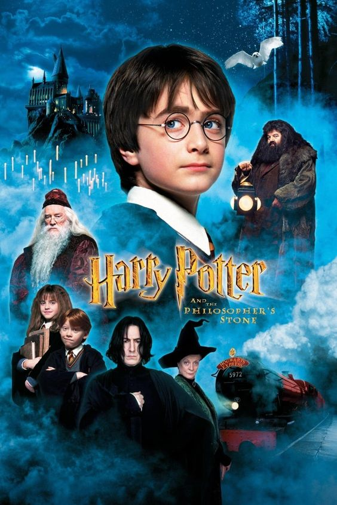
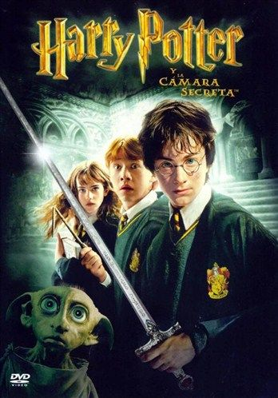
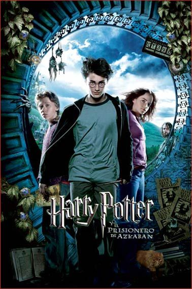
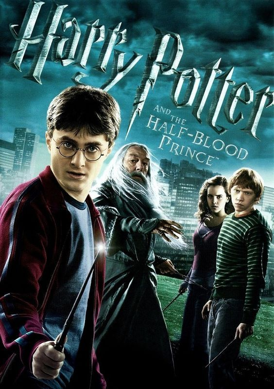
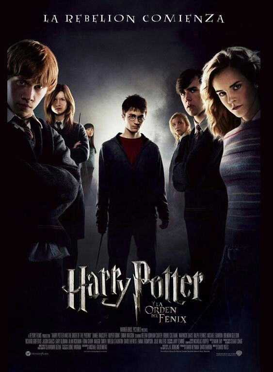
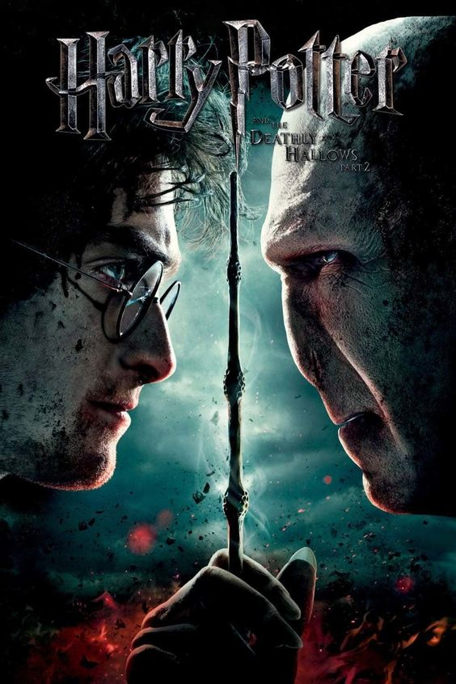
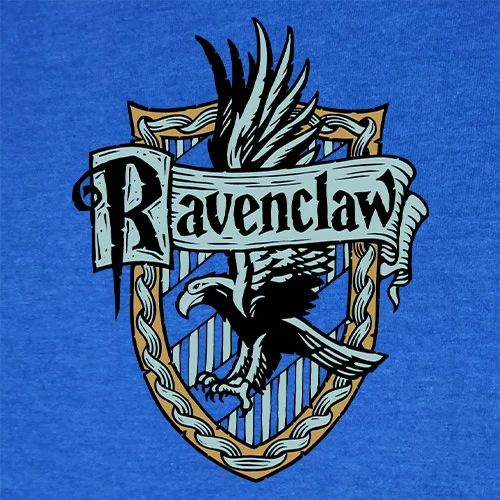
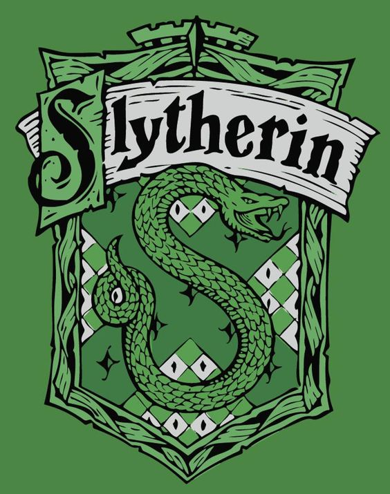

Bienvenidos al Mundo de Harry Potter
En este sitio encontrarás información detallada sobre el universo de Harry Potter, incluyendo personajes, casas, hechizos y mucho más.
Descripción de la API de Harry Potter
La API de Harry Potter proporciona datos detallados sobre personajes, casas, hechizos y mucho más del mundo mágico creado por J.K. Rowling. Es una herramienta útil para desarrolladores que desean incorporar información de Harry Potter en sus aplicaciones web.
Historia Completa
Harry Potter es una serie de libros escritos por J.K. Rowling que sigue la vida del joven mago Harry Potter y sus amigos Hermione Granger y Ron Weasley, todos estudiantes del Colegio Hogwarts de Magia y Hechicería. La historia se centra en la lucha de Harry contra el oscuro mago Lord Voldemort, quien asesinó a los padres de Harry en su intento de conquistar el mundo mágico.

Peliculas
1. Harry Potter y la Piedra Filosofal (2001)
Harry Potter, un niño huérfano, descubre en su undécimo cumpleaños que es un mago. Recibe una carta de aceptación al Colegio Hogwarts de Magia y Hechicería y pronto se entera de que es famoso en el mundo mágico por haber sobrevivido a un ataque del oscuro mago Lord Voldemort cuando era un bebé. En Hogwarts, Harry hace amigos como Ron Weasley y Hermione Granger, y juntos descubren la existencia de la Piedra Filosofal, un objeto mágico que otorga la inmortalidad. Finalmente, Harry y sus amigos impiden que Voldemort obtenga la piedra y vuelvan a Hogwarts a salvo.
2. Harry Potter y la Cámara Secreta (2002)
En su segundo año en Hogwarts, Harry escucha voces extrañas y descubre que la Cámara de los Secretos ha sido abierta, liberando un monstruo que petrifica a los estudiantes. Con la ayuda de Ron y Hermione, Harry descubre que el culpable es un diario mágico que pertenece a Tom Riddle, una versión más joven de Voldemort. Harry encuentra la cámara y derrota al basilisco que vive dentro, destruyendo el diario y salvando a Ginny Weasley, la hermana de Ron.
3. Harry Potter y el Prisionero de Azkaban (2004)
En su tercer año, Harry se entera de que Sirius Black, un prisionero de Azkaban, ha escapado y aparentemente busca matarlo. Harry descubre que Sirius es su padrino y fue incriminado por el traidor real, Peter Pettigrew, quien finge ser la rata mascota de Ron, Scabbers. Con la ayuda de Hermione y un giratiempo, Harry y Hermione salvan a Sirius y a Buckbeak, el hipogrifo, de una ejecución injusta.
4. Harry Potter y el Cáliz de Fuego (2005)
En su cuarto año, Hogwarts es sede del Torneo de los Tres Magos, una peligrosa competencia entre tres escuelas de magia. Aunque Harry no es elegible, es misteriosamente seleccionado como un cuarto campeón. Harry enfrenta varios desafíos y finalmente llega al cementerio donde Voldemort regresa a su forma física completa. Harry logra escapar y advierte al mundo mágico sobre el regreso de Voldemort, aunque pocos le creen.
5. Harry Potter y la Orden del Fénix (2007)
Harry lucha contra la incredulidad del Ministerio de Magia sobre el regreso de Voldemort. Mientras tanto, Dolores Umbridge, enviada por el Ministerio, se convierte en la profesora de Defensa Contra las Artes Oscuras y ejerce una estricta autoridad en Hogwarts. Harry y sus amigos forman "El Ejército de Dumbledore" para entrenarse en defensa. Al final, una profecía en el Departamento de Misterios revela que ni Harry ni Voldemort pueden vivir mientras el otro sobreviva. Sirius muere en la batalla y Voldemort es finalmente visto por el Ministerio, confirmando su regreso.
6. Harry Potter y el Misterio del Príncipe (2009)
En su sexto año, Harry descubre un viejo libro de pociones perteneciente al "Príncipe Mestizo". Con la ayuda de Dumbledore, Harry explora los recuerdos de Voldemort para entender cómo lo vencieron. Descubren que Voldemort ha dividido su alma en varios Horrocruxes, objetos en los que ha escondido partes de su alma. Harry y Dumbledore recuperan un Horrocrux, pero Dumbledore es asesinado por Snape, quien revela ser el Príncipe Mestizo.
7. Harry Potter y las Reliquias de la Muerte - Parte 1 (2010)
Harry, Ron y Hermione dejan Hogwarts para buscar y destruir los Horrocruxes de Voldemort. Descubren y destruyen algunos Horrocruxes mientras enfrentan peligros constantes. La película concluye con la muerte de Dobby el elfo doméstico y Voldemort robando la Varita de Saúco de la tumba de Dumbledore.
8. Harry Potter y las Reliquias de la Muerte - Parte 2 (2011)
La batalla final entre Harry y Voldemort tiene lugar en Hogwarts. Harry, Ron y Hermione destruyen los últimos Horrocruxes. En una confrontación épica, Harry se sacrifica, pero no muere y regresa para finalmente derrotar a Voldemort. La película termina con un epílogo que muestra a los personajes 19 años después, enviando a sus propios hijos a Hogwarts.
Casas de Hogwarts
Gryffindor
Fundada por Godric Gryffindor, esta casa valora el coraje, la valentía y la determinación.

Hufflepuff
Fundada por Helga Hufflepuff, esta casa valora la dedicación, la paciencia y el trabajo duro.
Ravenclaw
Fundada por Rowena Ravenclaw, esta casa valora la inteligencia, la sabiduría y el aprendizaje.
Slytherin
Fundada por Salazar Slytherin, esta casa valora la ambición, la astucia y la determinación.
Hechizos Famosos
Expelliarmus
Un hechizo de desarme usado para quitar la varita u objeto de la mano del oponente.
Expecto Patronum
Un hechizo de protección que invoca un Patronus, utilizado para ahuyentar a los dementores.
Wingardium Leviosa
Un hechizo de levitación utilizado para hacer flotar objetos.
Avada Kedavra
Uno de los tres Maleficios Imperdonables, este hechizo causa la muerte instantánea.